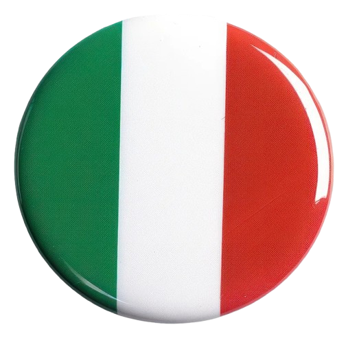

TicTacToe

A classic Tic‑Tac‑Toe game implemented in Python with a simple command‑line interface. It supports two players, checks for win/draw conditions, and demonstrates core programming concepts like game logic and user input handling.
Open projectIP Calculator in C#

IP subnet calculator that takes an IP address to compute network details like network address, broadcast address, and host range. Designed to help understand IPv4 addressing and subnetting.
Open projectSimple Calculator in C#

A simple calculator app written in C# that performs basic arithmetic operations like addition, subtraction, multiplication, and division. It demonstrates fundamental programming logic and user input handling.
Open projectVotingBot
Basically i made an automated program to vote for our kitchen ladies in a competition. It was really fun to find the exact API calls which are used to peform sumbitting the voting and it was quite hard to do it without being rate limited.
Open projectBLE Bluetooth Connect

A simple Python project that uses (BLE) to discover nearby devices and establish a connection using the Bleak library. It lets you send a test message over BLE and handle basic GATT communication between devices.
Open projectTurin Website

A group project website built with HTML and CSS as part of a team assignment. The repository includes a collaborative design and frontend code showcasing our static site layout and visual design work.
Open project